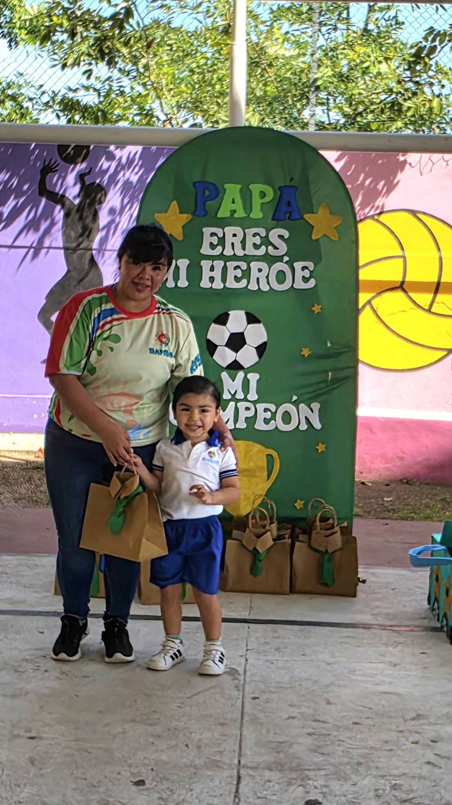

01
Lactantes y Maternal
Cuidado especializado para bebés desde la etapa de lactancia, con el Sistema Bebé Políglota que estimula el lenguaje y los sentidos desde los primeros meses.
Bambinis · Guardería y Estancia Infantil
En Bambinis cuidamos, educamos y consentimos a tu hijo con cariño de verdad. Mientras tú cumples con tu trabajo o tus pendientes, nosotros nos encargamos de que tu peque aprenda, juegue y se sienta como en casa. Atendemos desde lactantes hasta los 10 años, en Fracc. Justo Sierra, Ciudad del Carmen.


Quiénes Somos
Bambinis nació para darles tranquilidad a los papás y felicidad a los niños. Sabemos lo que significa confiarnos lo más importante de tu vida: por eso en nuestras instalaciones de Fracc. Justo Sierra cada rincón está pensado para que tu hijo juegue, aprenda y se sienta como en casa, mientras tú resuelves tu día con la mente tranquila.
Somos un equipo cálido y comprometido que acompaña a tu familia desde la etapa de lactancia hasta los 10 años, con salas de cupo limitado para cuidar a cada niño con la atención que merece.
Un lugar seguro, divertido y lleno de aprendizajes, cuidado en cada detalle.
Sistema Bebé Políglota: estimulamos el lenguaje y los sentidos desde los primeros meses.
3 horarios disponibles y paquetes por horas, días o semanas, a tu medida.
¿Consejo Técnico, junta o suspensión de labores? Nosotros recibimos a tu peque sin complicaciones.
Nuestros Servicios
De la etapa de lactancia a los 10 años: actividades y cuidados pensados para cada edad, con maestras cálidas y un ambiente lleno de color y aprendizaje.
Cuidado especializado para bebés desde la etapa de lactancia, con el Sistema Bebé Políglota que estimula el lenguaje y los sentidos desde los primeros meses.

Pequeños artistas en acción: manualidades que desarrollan la motricidad fina y la imaginación de tu hijo cada semana.

Historias que despiertan la imaginación, el lenguaje y el amor por la lectura desde temprana edad.

Ritmo, movimiento y diversión: la música y el baile ayudan a tu hijo a expresarse y ganar confianza.

Aprender jugando: actividades pensadas para estimular la lógica, la memoria y las habilidades sociales.

Energía al aire libre: rutinas y juegos físicos que cuidan la salud y el desarrollo motor de los más pequeños.

Atención con Amor
Cada actividad está pensada para que tu hijo se sienta seguro, escuchado y feliz. Nuestro equipo acompaña su desarrollo con paciencia, cariño y mucha creatividad, para que Bambinis se sienta como una segunda casa.
Conoce nuestros servicios
Nuestras Instalaciones
Contamos con áreas amplias, coloridas y equipadas para que tu hijo explore, juegue y aprenda con total seguridad, dentro de instalaciones limpias y supervisadas en todo momento. Porque la tranquilidad de los papás empieza por un espacio seguro.
Agenda una visitaUbícanos
Estamos en Ciudad del Carmen, Campeche, a un mensaje de distancia. Escríbenos por WhatsApp y con gusto te ayudamos a inscribir a tu hijo.
Calle 31B S/N, Esquina 64, Fracc. Justo Sierra,
Ciudad del Carmen, Campeche
Teléfono / WhatsApp: 938 107 9202
Horario: Lunes a viernes, 7:30 am – 7:00 pm
Galería
Un vistazo real a los espacios, actividades y sonrisas que hacen especial cada día en nuestra guardería.
Contacto
Cuéntanos qué necesita tu familia y con gusto te orientamos. Al enviar el formulario, se abrirá WhatsApp con tu mensaje listo para nuestro equipo.
Escríbenos y con gusto te atendemos para resolver tus dudas o inscribir a tu hijo.
938 107 9202Conoce nuestra ubicación exacta y cómo llegar a Bambinis en Fracc. Justo Sierra.
Ver ubicación